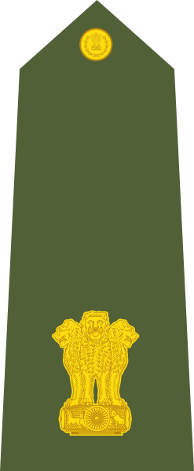

Major

Majors are typically assigned as specialized executive or operations officers for battallion-sized units of 300 to 1,200 soldiers. In some militaries, notably France and Ireland, the rank of major is referred to as commandant , while in others it is known as captain-major . It is also used in some police forces and other paramilitary rank structures, such as the New York State Police , New Jersey State Police and several others. As a police rank, Major roughly corresponds to the UK rank of Superintendent .